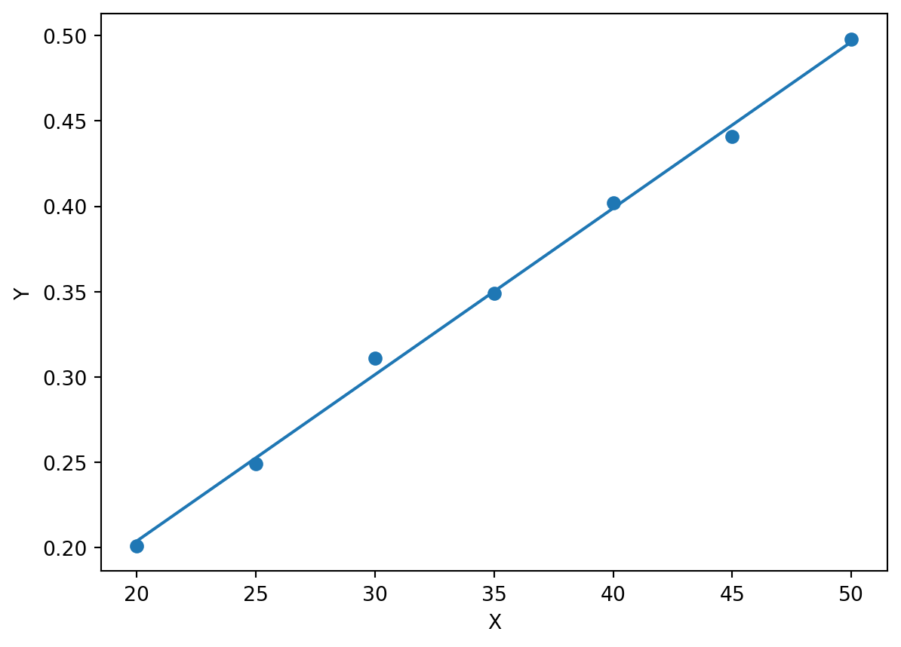

Code
from pylab import *
Datos = array(
[[20, 0.20104],
[25, 0.24930],
[30, 0.31100],
[35, 0.34878],
[40, 0.40206],
[45, 0.44086],
[50, 0.49794]])| \(X (\Delta x)\) | \(Y (T)\) | \(XY\) | \(X^2\) | \(Y-b-mX\) | \((Y-b-mX)^2\) |
|---|---|---|---|---|---|
| 20 | 0.20104 | 4.0208 | 400 | -0.002862857143 | 0.00000819595102 |
| 25 | 0.24930 | 6.2325 | 625 | -0.003348571429 | 0.00001121293061 |
| 30 | 0.31100 | 9.3300 | 900 | 0.009605714286 | 0.00009226974694 |
| 35 | 0.34878 | 12.2073 | 1225 | -0.00136 | 0.0000018496 |
| 40 | 0.40206 | 16.0824 | 1600 | 0.003174285714 | 0.0000100760898 |
| 45 | 0.44086 | 19.8387 | 2025 | -0.006771428571 | 0.0000458522449 |
| 50 | 0.49794 | 24.8970 | 2500 | 0.001562857143 | 0.000002442522449 |
| \(\Sigma X=\) 245 | \(\Sigma Y=\) 2.45098 | \(\Sigma XY=\) 92.6087 | \(\Sigma X^2=\) 9275 | \(\Sigma (Y-b-mX)^2=\) 0.0001718990857 | |
| \((\Sigma X)^2\)=60025 |
from pylab import *
Datos = array(
[[20, 0.20104],
[25, 0.24930],
[30, 0.31100],
[35, 0.34878],
[40, 0.40206],
[45, 0.44086],
[50, 0.49794]])\[\begin{align} m &= \frac{\displaystyle n\sum_{i=1}^n x_i y_i -\sum_{i=1}^{n} x_i\sum_{i=1}^n y_i}{\displaystyle n\sum_{i=1}^n x_i^2-\bigg( \sum_{i=1}^n x_i \bigg)^2}\\ m &= 0.009749142857 \end{align}\]
X = Datos[:,0]
Y = Datos[:,1]
n = len(X)
SX = sum(X)
SY = sum(Y)
SXY = sum( X*Y )
SXX = sum(X*X)
m = (n*SXY-SX*SY)/( n*SXX-SX*SX )
print("m=",m)m= 0.009749142857142859\[\begin{align} b &= \frac{\displaystyle \sum_{i=1}^{n} x_i^2 \sum_{i=1}^{n} y_i - \sum_{i=1}^{n} x_i\sum_{i=1}^{n} x_i y_i}{\displaystyle n\sum_{i=1}^n x_i^2-\bigg( \sum_{i=1}^n x_i \bigg)^2}\\ b &= 0.00892 \end{align}\]
b = (SXX*SY - SX*SXY)/( n*SXX-SX*SX )
print("b=",b)b= 0.008919999999999739\[\begin{align} u(m) &= \sqrt{ \frac{\displaystyle n\sum_{i=1}^n (y_i-mx_i-b)^2}{\displaystyle (n-2) \bigg[ n\sum_{i=1}^n x_i^2-\bigg( \sum_{i=1}^n x_i \bigg)^2 \bigg]} }\\ u(m) &= 0.00022161684162038723\\ \end{align}\]
Sy_mx_b2 = sum( (Y-m*X-b)*(Y-m*X-b) )
um = sqrt( n*Sy_mx_b2/( (n-2)*(n*SXX-SX*SX) ) )
print("u(m)",um)u(m) 0.00022161684162038723\[\begin{align} u(b) &= \sqrt{ \frac{\displaystyle \bigg[ \sum_{i=1}^{n} x_i^2 \bigg] \bigg[ \sum_{i=1}^n (y_i-mx_i-b)^2 \bigg] }{\displaystyle (n-2) \bigg[ n\sum_{i=1}^n x_i^2-\bigg( \sum_{i=1}^n x_i \bigg)^2 \bigg]} }\\ u(b) &= 0.008066974801558477 \end{align}\]
ub = sqrt( SXX*Sy_mx_b2/((n-2)*(n*SXX-SX*SX)) )
print("u(b)=",ub)u(b)= 0.008066974801558477scatter( X,Y )
x = linspace(X.min(),X.max())
y = m*x+b
plot( x,y )
xlabel('X');
ylabel('Y');